Communism
Islamic Critiques of Marxism/Communism:
===============================
Islam And Communism-By Dr. Khalifa Abdul Hakim
http://www.mediafire.com/file/6xt3mquhyynam1n/Islam_%2526_Communism.pdf/file
Marxism and Other Western Fallacies: An Islamic Critique-By Ali Shariati
http://blogs.law.columbia.edu/nietzsche1313/files/2016/12/Shariati-Marxism-and-other-Western-fallacies.pdf
Socialism aur Islam-By Maulana Wahidudin Khan
(Socialism and Islam, written in Urdu)
https://archive.org/details/SocialismAurIslam/mode/2up
Islam and Historical Materialism-By Murtadha Mutahhari
https://www.al-islam.org/society-and-history-ayatullah-murtadha-mutahhari/islam-and-historical-materialism
Criticism of Historical Materialism-By Murtadha Mutahhari
https://www.al-islam.org/society-and-history-ayatullah-murtadha-mutahhari/criticism-historical-materialism
Critique of Marxist Philosophy-By Muhammad Baqir al-Sadr
https://cdn.discordapp.com/attachments/825239155726090240/827254568307261491/Critique_of_Marxist_Philosophy1_1-1.pdf
Pan-islamism and Bolshevism-By Shaikh Mushir Hosain Kidwai
https://archive.org/details/in.ernet.dli.2015.206496/mode/2up
The Abolition of Personal Ownership of Property-By Shaikh Mushir Hosain Kidwai
https://cdn.discordapp.com/attachments/839776970447126538/864281300193247282/abolitionpersonalownershipproperty.pdf
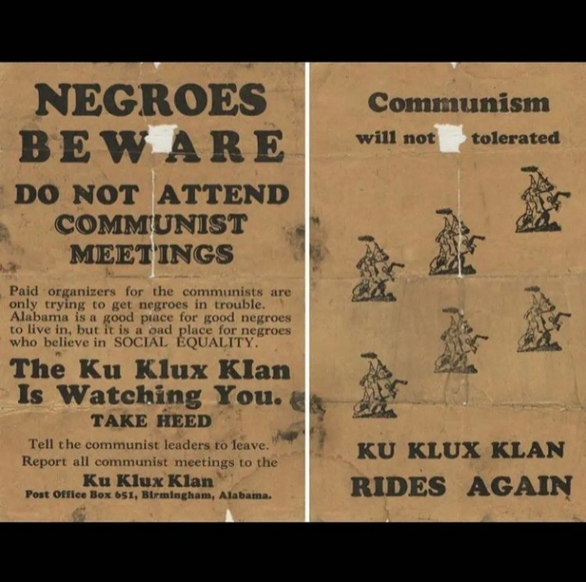
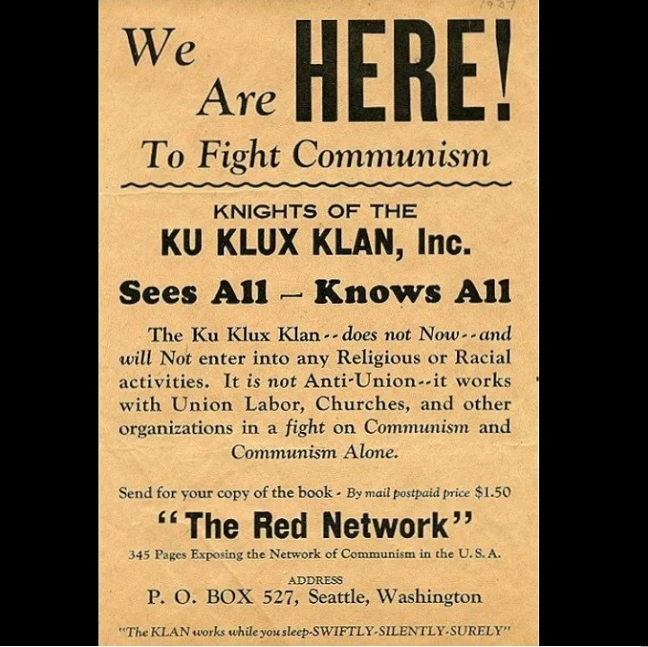
Anime fans try not to be racist challenge! Impossible.
نقض أوهام المادية الجدلية للشيخ البوطي
https://www.kutubpdfbook.com/book/%D8%AA%D8%AD%D9%85%D9%8A%D9%84-%D9%83%D8%AA%D8%A7%D8%A8-%D9%86%D9%82%D8%B6-%D8%A3%D9%88%D9%87%D8%A7%D9%85-%D8%A7%D9%84%D9%85%D8%A7%D8%AF%D9%8A%D8%A9-%D8%A7%D9%84%D8%AC%D8%AF%D9%84%D9%8A%D8%A9.html/download
تحميل كتاب نقض أوهام المادية الجدلية - مقهى الكتب
تحميل كتاب نقض أوهام المادية الجدلية - كتب pdf للتحميل
المذهب الاقتصادي بين الشيوعية والإسلام للشيخ البوطي
https://www.noor-book.com/%D9%83%D8%AA%D8%A7%D8%A8-%D8%A7%D9%84%D9%85%D8%B0%D9%87%D8%A8-%D8%A7%D9%84%D8%A7%D9%82%D8%AA%D8%B5%D8%A7%D8%AF%D9%8A-%D8%A8%D9%8A%D9%86-%D8%A7%D9%84%D8%B4%D9%8A%D9%88%D8%B9%D9%8A%D9%87-%D9%88%D8%A7%D9%84%D8%A7%D8%B3%D9%84%D8%A7%D9%85-pdf
تحميل كتاب المذهب الاقتصادي بين الشيوعية والإسلام pdf
المذهب الاقتصادي بين الشيوعية والإسلام الكاتب بوطي محمد سعيد رمضان مكان النشر دمشق الناشر المكتبة الاموية تاريخ النشر 1959 الموضوع Communism and religionIslam -- Economic aspects رقم النداء HX550 I8 B885 1959 المجموعة Arabic Collections Online اللّغة
Similarities between Marxism and Religion:
"I think we recognize in the history of Marxism each of the attributes which we cited as characteristic of a mythology in the full theological mould. We have the vision of the prophet and the canonic texts which are bequeathed to the faithful by the most important apostle. Witness the whole relation between Marx and Engels; the posthumous completion of the “Kapital”; the gradual publication of the early sacred texts. We find a history of ferocious conflict between the orthodox heirs to the master and the heretics, an unbroken family of fission from the time of the Mensheviks to Trotsky and now to Mao. Each time (and this is the theological scenario) a new group of heretics breaks away; and it always says, look, we have the real message of the master; listen to us, the sacred texts have been corrupted, the Gospel is in our keeping; don’t listen to the church at the centre. How familiar all this is to students of the history of Christianity. Marxism has its legends, it has its iconography, by which I mean the standard pictures of Lenin, the whole history of Lenin’s life in millions of stories, tales, operas, films—even ballet. Marxism has its vocabulary. Marxism has its emblems, its symbolic gestures, just like any transcendent religious faith. It says to the believer, I want from you a total commitment. I want from you a total investment of conscience and person into my keeping. And in exchange, as does a great theology, it offers a complete explanation of man’s function in biological and in social reality. Above all, it offers a contract of messianic promise concerning the future.
Marxism, has predicted over and over the apocalypse of its enemies and the coming of the classless, perfect society. So on grounds of prophecy as well as on grounds of history, it has failed. Worse, where it is in power it has not brought liberation but bureaucratic terror. Already the Marxist programme for mankind is beginning to assume aspects of historical decay.
Already we are beginning to look back at a great house of belief and conviction, starting up in the mid-nineteenth century, changing our world, of course—as do these great religious mythologies—but being eroded itself and crumbling at many of its vital points. Marxism, too, is beginning to look today like one of the great, empty churches." Nostalgia for the absolute.
https://journals.sagepub.com/doi/abs/10.1177/0022002795039001001
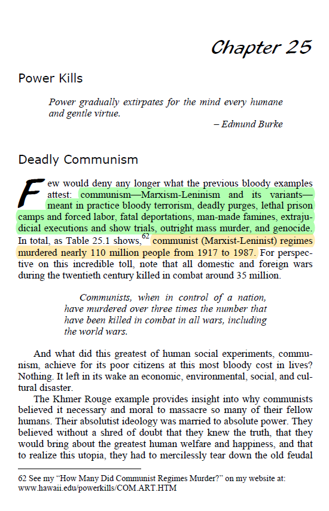
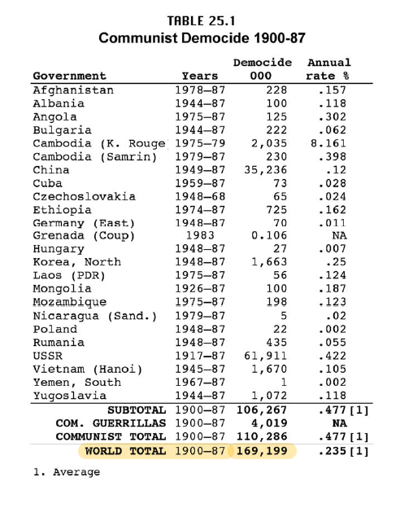
Marx and the Critique of (Civil) Religion
https://www.youtube.com/watch?v=EPr37CprRO8
The Black Book of Communism
http://www.conflicts.rem33.com/images/books/THE%20BLACK%20BOOK%20OF%20COMMUNISM.pdf
VS
Professor Wolff on Communism Death Toll
https://www.youtube.com/watch?v=yI4KIGOftUs
The Protocols of the Learned Elders of Zion
https://marxistdegeneracy.files.wordpress.com/2018/12/The-Protocols-Of-The-Learned-Elders-Of-Zion.pdf
Debunking this document:
Jewish-Bolshevism Debunked by Holocaust Documents:
https://archive.org/details/jewish-bolshevism-debunked
https://media.discordapp.net/attachments/735408540776398938/737704836593745952/image0.jpg
Qur'an And Karl Marx Theory
https://youtu.be/8B5ivffmg0I
Romantic Karl Marx anime targets new generation of Chinese communists
https://edition.cnn.com/2019/01/25/asia/china-marx-anime-intl/index.html
https://b-ok.cc/book/3505074/b1aeda
Wall Street and the Bolshevik Revolution | Anthony Cyril Sutton | d...
Still an opium? Contemporary Marxists versus Karl Marx on the question of religion
https://blogs.lse.ac.uk/religionglobalsociety/2018/05/still-an-opium-contemporary-marxists-versus-karl-marx-on-the-question-of-religion/
الماركسية والإسلام | مصطفى محمود
https://www.noor-book.com/%D9%83%D8%AA%D8%A7%D8%A8-%D8%A7%D9%84%D9%85%D8%A7%D8%B1%D9%83%D8%B3%D9%8A%D8%A9-%D9%88%D8%A7%D9%84%D8%A7%D8%B3%D9%84%D8%A7%D9%85-%D8%A7%D9%84%D9%83%D8%A7%D8%AA%D8%A8-%D8%AF%D9%85%D8%B5%D8%B7%D9%81%D9%89-%D9%85%D8%AD%D9%85%D9%88%D8%AF-pdf
لماذا رفضت الماركسية | مصطفى محمود
https://www.noor-book.com/%D9%83%D8%AA%D8%A7%D8%A8-%D9%84%D9%85%D8%A7%D8%B0%D8%A7-%D8%B1%D9%81%D8%B6%D8%AA-%D8%A7%D9%84%D9%85%D8%A7%D8%B1%D9%83%D8%B3%D9%8A%D8%A9-%D8%A7%D9%84%D9%83%D8%A7%D8%AA%D8%A8-%D8%AF-%D9%85%D8%B5%D8%B7%D9%81%D9%89-%D9%85%D8%AD%D9%85%D9%88%D8%AF-pdf
https://twitter.com/sovietvisuals/status/1483138046501404676?s=21
Soviet Visuals (@sovietvisuals)
"Literacy is the path to communism" Soviet poster, 1920
https://youtu.be/x5bwdcCY6iE
YouTube
ObscureAudioHistory
Communists in the Struggle for N Rights - 1945
https://youtu.be/-ESNOmdG7R4
YouTube
Sapience Institute
Londoniyyah - Part 16 - Marxism/1 | Mohammed Hijab
https://youtu.be/AL6YzHBiJ0A
YouTube
Sapience Institute
Londoniyyah - Part 17 - Marxism/2 | Mohammed Hijab
https://aeon.co/essays/the-idea-of-primitive-communism-is-as-seductive-as-it-is-wrong
Aeon
The idea of primitive communism is as seductive as it is wrong | Ae...
Marx’s idea that societies were naturally egalitarian and communal before farming is widely influential and quite wrong
https://youtu.be/cWUEdtPMqYw
YouTube
Mohammed Hijab
Capitalism, Marxism and Islamic Economics with Prof Richard D. Wolf...
The brutal art of early Soviet antireligious propaganda posters
https://rarehistoricalphotos.com/soviet-antireligious-propaganda-posters/
Rare Historical Photos
RHP
The brutal art of early Soviet antireligious propaganda posters, 19...
Marxism and the Muslim World-By Maxime Rodinson
Are Big Corporations Marxist? - “Corporate Communism” and Monopolies Explained-By Politsturm
As strange as it may seem, American right-wingers openly complain about their lost freedoms and opportunities under Capitalism...
by calling it Communism.
https://us.politsturm.com/are-big-corporations-marxist/
Pol Pot Was Not and Is Not A Communist
https://msuweb.montclair.edu/~furrg/pol/khmerrouge.html
Perestroika New Thinking for Our Country and the World by Mikhail Gorbachev
https://ia800900.us.archive.org/24/items/perestroikanewth00gorbrich/perestroikanewth00gorbrich.pdf
A Place for Marxism in Traditionalist Fiqh: Engaging the Indonesian Thinker Muhammad Al-Fayyadl-By Sawyer Martin French
https://themaydan.com/2020/05/a-place-for-marxism-in-traditionalist-fiqh-engaging-the-indonesian-thinker-muhammad-al-fayyadl/
https://youtu.be/jXHo-hkBj7E
YouTube
الشاشة السلفية
موقف الاسلام من الشيوعية و الراسمالية
https://youtu.be/7Vp9880QMOA
YouTube
NasirAlHanbali
Scenes Of Shaykh Muzammil Faqeeri Confuting & Silencing Some Commun...
The Ideology Of Communism A Fatwa By Sheikh Muhammad Bin Saleh Al Munajjid
https://islamqa.info/amp/en/answers/166104
The ideology of communism - Islam Question & Answer
Can One Be A Muslim Communist At The Same Time A Fatwa By Sheikh Muhammad Bin Saleh Al Munajjid
https://islamqa.info/amp/en/answers/3321
Can one be a
muslim and a communist at the same time? - Islam Q...
Is A Person Who Is Killed In A War Against The Communists Considered To Be A Martyr A Fatwa By Sheikh Muhammad Bin Saleh Al Munajjid
https://islamqa.info/amp/en/answers/9478
Is a person who is
killed in a war against the communists con...
Marxism And Leninism And Communism And Socialism And Baathism Are Ideologies Of Disbelief By Sheikh Abdulaziz Bin Baz
https://abdurrahman.org/2016/09/29/ideologies-of-disbelief-marxism-leninism-communism-socialism-baathism/
Karl Marx writes to Ghalib
https://marvisirmedblog.wordpress.com/2010/02/28/marx-writes-to-ghalib/
https://m.youtube.com/watch?v=vNqbpZObQqQ
YouTube
UM22
Karl Marx didn't actually says that/ Big Subtitles/Hamza Yusuf
https://www.marxists.org/archive/bukharin/works/1920/abc/11.htm
The ABC of Communism - Chapter 11: Communism and Religion Nikolai Bukharin
In practice, no less than in theory, communism is incompatible with religious faith. The tactic of the Communist Party prescribes for the members of the party definite lines of conduct. The moral code of every religion in like manner prescribes for the faithful some definite line of conduct. For example, the Christian code runs: 'Whosoever shall smite thee on thy right cheek, turn to him the other also.' In most cases there is an irreconcilable conflict between the principles of communist tactics and the commandments of religion. A communist who rejects the commandments of religion and acts in accordance with the directions of the party, ceases to be one of the faithful. On the other hand, one who, while calling himself a communist, continues to cling to his religious faith, one who in the name of religious commandments infringes the prescriptions of the party, ceases thereby to be a communist.
https://www.marxists.org/archive/lenin/works/1919/may/30c.htm
Lenin: 342. TO THE ORGANISING BUREAU OF THE CENTRAL COMMITTEE
342. TO THE ORGANISING BUREAU OF THE CENTRAL COMMITTEE
Islamism and Communism-By Haji Misbach
https://www.marxists.org/history/indonesia/1925-MisbachIslamism.html
Communism and Pan-Islamism- by Tan Malaka
https://www.marxists.org/archive/malaka/1922-Panislamism.htm
Revolutionary Transformation in the Arab World: Habash and His comrades From Nationalism to Marxism By Walid Kazziha
https://cloudflare-ipfs.com/ipfs/bafykbzacecjqxcbuuqmay6tkkmntlywp5fcmoimuez52k45kec732oisl4rwi?filename=Walid%20Kazziha%20-%20Revolutionary%20Transformation%20in%20the%20Arab%20World_%20Habash%20and%20His%20comrades%20From%20Nationalism%20to%20Marxism-St.%20Martin%27s%20%281975%29.pdf
Soviet campaign against the Hijab and Niqab: https://en.m.wikipedia.org/wiki/Hujum
Marx and Marxism
From: Islam Between East and West By 'Alija 'Ali Izetbegovic
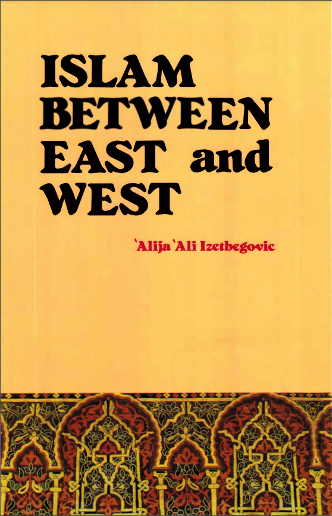
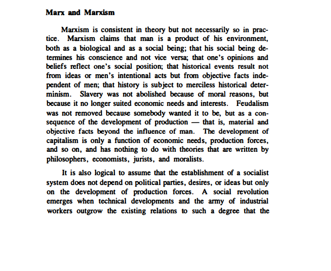
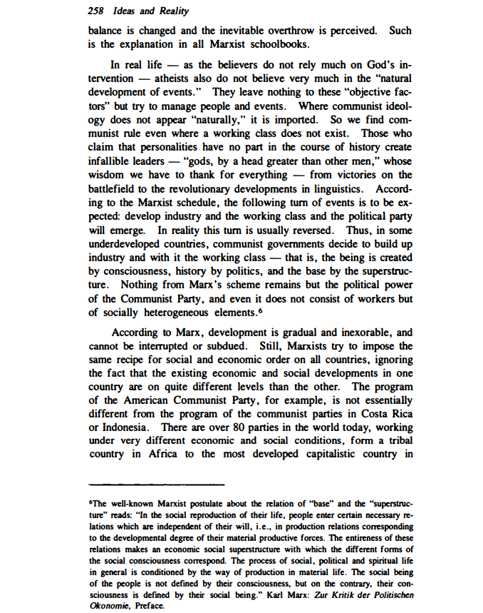
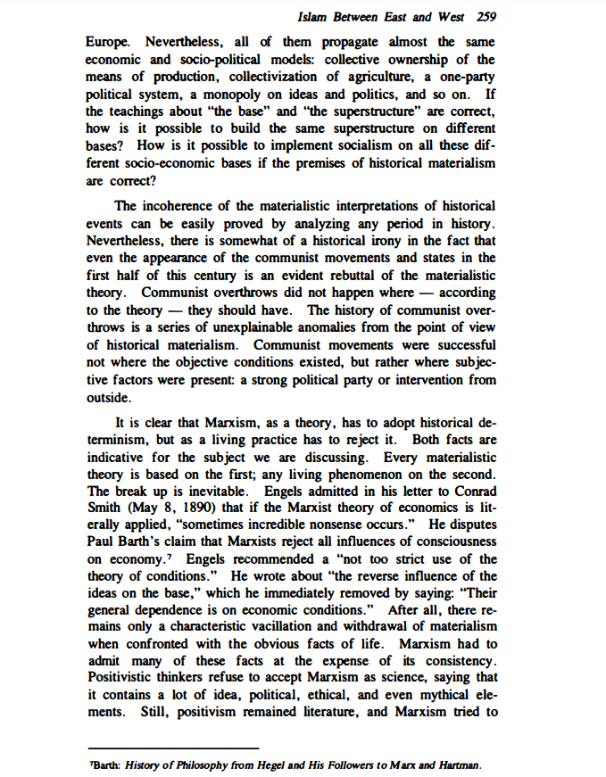
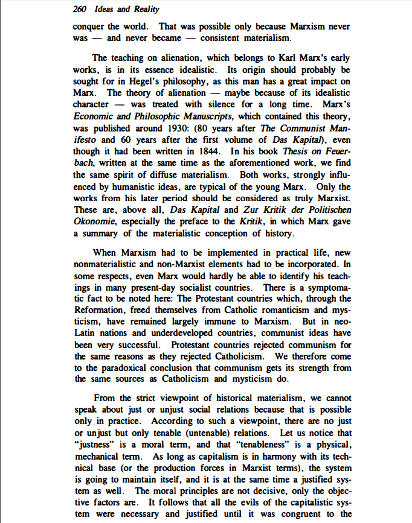
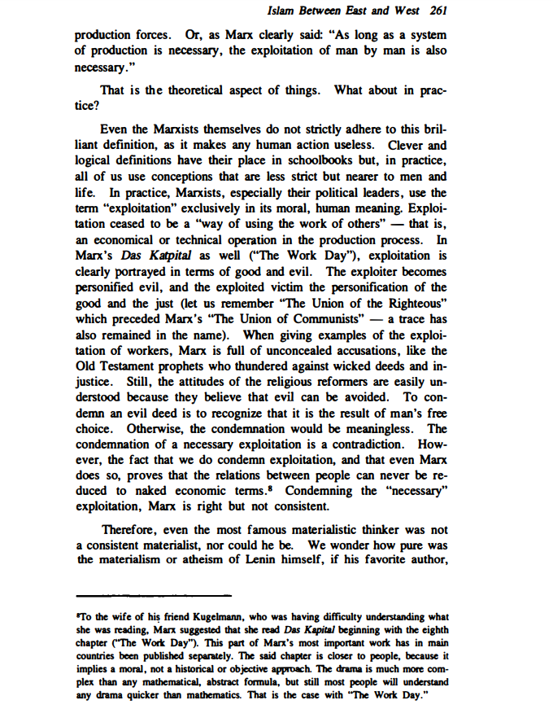
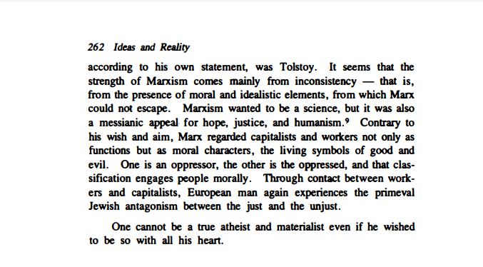
Karl Marx
Karl Marx Archive:
https://www.marxists.org/archive/marx/
Critique of the Gotha Programme-By Karl Marx:
https://www.marxists.org/archive/marx/works/1875/gotha/
The German Ideology-By Karl Marx
https://www.marxists.org/archive/marx/works/1845/german-ideology/index.htm
Communist Manifesto-By Karl Marx and Frederick Engels
https://www.marxists.org/archive/marx/works/download/pdf/Manifesto.pdf
Das Kapital (Volume 1)-By Karl Marx
https://www.marxists.org/archive/marx/works/download/pdf/Capital-Volume-I.pdf
Wage Labour and Capital-By Karl Marx
https://www.marxists.org/archive/marx/works/download/pdf/wage-labour-capital.pdf
Theses On Feuerbach-By Karl Marx
https://www.marxists.org/archive/marx/works/1845/theses/theses.htm
Private Property and Communism-By Karl Marx
https://www.marxists.org/archive/marx/works/1844/manuscripts/comm.htm
Summary of Das Kapital-By Carlo Cafiero
https://www.marxists.org/archive/cafiero/1879/summary-of-capital.htm#i
Karl Marx writes to Ghalib
https://marvisirmedblog.wordpress.com/2010/02/28/marx-writes-to-ghalib/
Baaghi
Marvi Sirmed
Marx Writes to Ghalib
Following is the text of a letter that Marx wrote to Ghalib. The letter was found by Abida Ripley from India Office Library, London. Ittook her 15 years to dig out the details of this correspondenc…
Marx on Alienation from Labour
https://www.youtube.com/watch?v=ec-wDiI-Y1Q
YouTube
Red Plateaus
Marx on Alienation from Labour | Red Plateaus
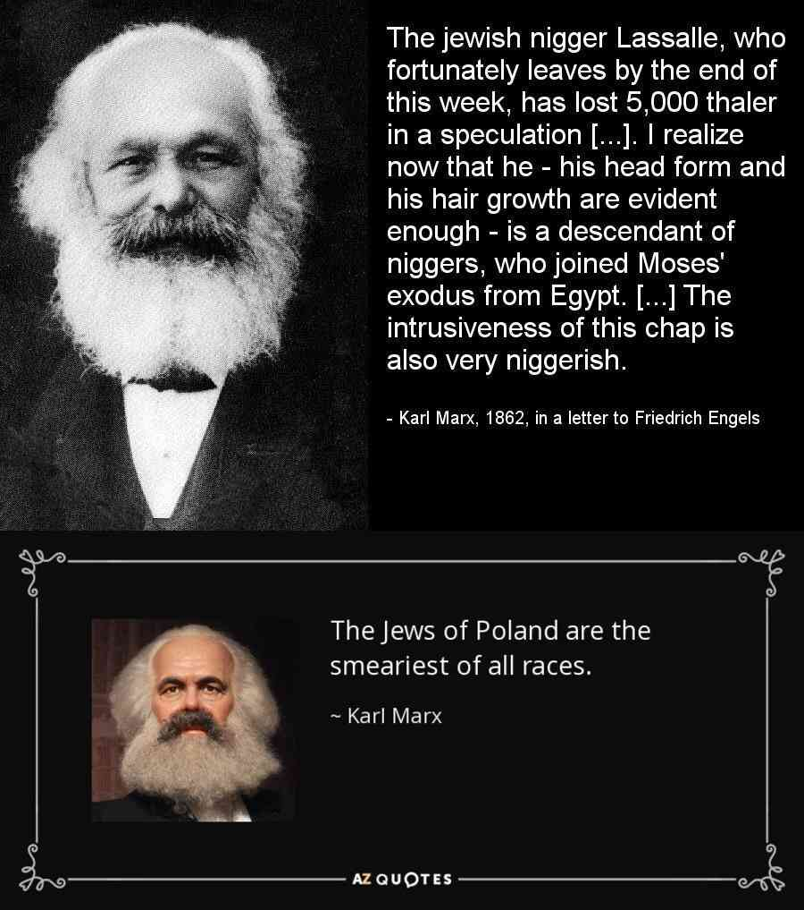
Marx: The Historical Necessity of Slavery and Agriculture by Dana Francisco Miranda
https://cosmosandhistory.org/index.php/journal/article/view/385/943
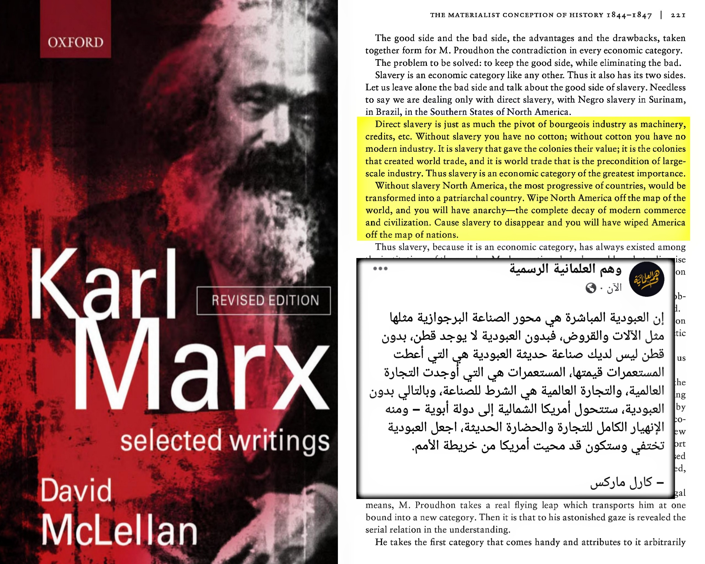
Marx’s Dialectical Historicism
https://hesiodscorner.wordpress.com/2018/07/03/marxs-dialectical-historicism/
WHY COMMUNISM DOESN’T WORK
Do you know that bees work in a perfectly synchronized way with their swarm. They don’t have to be trained or taught how to behave and work.
For example, the first thing a bee does is clean the cell where it was born for the next larva or to store honey – whatever the hive needs.
It then has various roles like building the honeycomb with beeswax, repairing the hives, foraging for nectar and pollen, etc.
All of these duties and roles are built into the bee’s DNA. As the bee grows older, hormones are released which activate the part of their DNA that tell them what job they need to do and when.
Ant colonies are the same way. Individual ants behave according to their DNA and hormones.
For example, a couple of days after an ant dies, it releases a chemical that makes the live ants take the dead body to a section in the colony called the graveyard. If you spray the same chemical on a live ant, it will walk to the grave and lie there – even though it is alive.
My point is that ants and bees form complex and productive societies with no quarrels, courts, police, and no moral code or religion. They do what they are programmed to do all their life, at great advantage to their colonies and swarms.
This is the communist utopia.
Humans are Not Bees
Humans don’t operate like this.
We do not simply adopt societal roles at birth that are decided by our DNA and hormones.
We have the ability to think for ourselves. We do not rely on our DNA to tell us what to do.
This is the big thing that makes us different from bees and ants – we have a sense of self and we think in our own best interests.
A bee that collects twice as much nectar as the other bees does not think that it deserves something more than the other bees.
She does not feel discriminated against when the other bees get the same rewards as it did even though they collected only half as much nectar as her.
A bee does not think that if she’s going to get the same amount of benefits regardless of how much nectar it collects, then she should do the least amount of work possible.
Human Nature and its Incentives
Humans for the most part think of their own best interests.
We’re talking about 99% of humanity, not the exceptions to the rule.
Most humans are selfish and have an ego. Anyone who disagrees with this is naive and lacks life experience.
Selfishness (i.e. what’s in it for me?), competitiveness (i.e. do I have more than my neighbor?), and the concept of fairness (i.e. am I getting the same stuff for the same effort) are innate parts of human nature.
Let me elaborate further:
Selfishness
When a man works, he does it for his benefit. He wants to get something from it – be it money, sex, food (for himself or for his loved ones). Most humans do not work for it’s own sake.
This is especially true for repetitive work like in factories and fields.
Man would not toil on the field if he did not get to eat what grew on it. Man will not slave away in a factory producing trinkets if he didn’t get paid for it.
A man only works without reward when he is forced to do so – under threat and duress. The black slaves in America would not have worked on the plantations if they didn’t fear the punishment of their masters.
Competitiveness
Wealth and status are relative. Human nature wants us to be better than our neighbours.
You see this in your everyday life.
When the average Joe sees his friend has a new car, he wants to buy a better car to compete, even if he has to go in debt to do so.
Women get jealous of their friend’s more successful husbands and compete with each other on who has the best purses and dresses.
The middle class person of today lives a better life than the kings of ages past with his air conditioners and computers, but still doesn’t feel like a king because he knows there are many people doing much better than him.
Humans are competitive. They want to be better than their neighbour and they get jealous when they see others do better than them.
Even though this is their uglier side of human nature, it is still human nature. It’s a part of how evolution wired us (only the best men pass on their genes) and we have to accept it and design society while accounting for it.
Fairness
The concept of fairness is also wired into our genes and is closely tied with competitiveness.
People expect equal reward for equal work and feel discriminated against when they think they’re not getting enough reward (recognition/money) for their effort or others are getting more reward for the same effort.
If you’re running a business and you pay the guy who does 2x the work the same amount as a guy who does half the work, the guy who does twice the work will either quit or ask to be paid more.
If you are a teacher and you give two students different marks for writing the same answer, the student who got the lower grade will ask for a grade revision and will complain if he isn’t given equal grade.
If you take two children who are brothers, and give only one of them a chocolate, the brother who didn’t get the chocolate will cry to his mother that he should get a chocolate too because his brother got a chocolate.
And if you still don’t believe that fairness is hardwired in our nature, here is a video of two apes being “paid” differently for the same work and see how they react to it. This is the “Capuchin monkey fairness experiment” and is clipped out of a TED talk given by Frans de Waal.
The Reason Why Communism Fails Every Time it’s Tried
The reason communism fails every time it’s tried is because communism (and to a large extent socialism) doesn’t account for human nature.
Under communism, you can’t have personal gain because the concepts of money and private property do not exist. Everything belongs to the state and is distributed equally or according to need.
The government decides what job a man needs to do and also determines what reward he will get for it.
Not only does this demotivate people as they don’t get to decide their own occupation, it also goes against man’s desire to have more than his neighbours and the principle of fairness.
When a man realizes that he will be forced to work a job he is not particularly interested in performing and that he will be given the same reward regardless of whether he is extremely productive or if he does the minimum – the vast majority of men decide to do the minimum.
The working man makes the choice to do the least he can while staying out of trouble not out of laziness but because he doesn’t find it fair that if he works harder, he would get the same rewards as others who didn’t work hard.
The same man would stop being lazy and work his ass off he was promised more reward (money/status/recognition – depending on the person) for more effort.
This culminates in massive drops in the productivity of the communist economy as a whole as most men choose to do the minimum they can without getting punished for it.
What this leads to is problems for the government, who tries to fix it by issuing quotas for production from workers and tell the governmental managers of the factory that they need to do whatever it takes to meet those quotas (or they themselves will be punished).
Once things get here, the average person (i.e. a worker) is reduced to a lowly paid slave who will be sent to prison if he doesn’t work as hard as his manager needs him to work.
And if the manager is kind and doesn’t comply, he will be sent to prison for not meeting the production quota.
In a cruel twist of fate, the workers who went on strikes to get communism find themselves being sent to gulags if they ever strike again in their new communist regime.
Instead of a man freely choosing his occupation and working for personal profit and gain, in communism, man is assigned a role and is given no incentive to work harder except that he will be severely punished if he doesn’t produce enough.
This makes the entire country and system poorer as you never get the best work of man which is produced when he has the desire to improve his work and product in expectation of personal gain and when he’s not trying to meet a government assigned quota but trying to make more money for himself.
The reason why capitalism makes societies richer and communism makes societies poorer is simply this: capitalism is aligned with human nature while communism goes against human nature.
Many men think “I will work really hard so I have more”. No man thinks “I am going to work really hard so that everyone including the people I don’t know have the exact same as me”.
Communism works in theory just like how everyone is nice and selfless in theory. Capitalism works in practice because people are people.
A Thought Experiment
Some of you reading this are likely to be in universities where professors tend to be extremely leftist and pro-communistic.
Most of these professors are upper class, tenured or have great job security, and live in their theoretical academic bubble as they do not spend time in the real world to test their theories. [1]
Here is a practical experiment you can run in your head to see for yourself why communism doesn’t work:
Imagine that for all of your university exams, instead of you being given the grade that you earned (as in a meritocratic system), your professor totaled up everyone’s grades and then divided them equally for every student.
How hard would you study in this system?
Now imagine that on a nationwide level. Instead of you getting the grade you earn, the grades for all students across the country are totaled up and divided equally among all students.
No matter how much or how little you study, everyone you know always gets the exact same grade as you.
How hard would you study in this system?
How hard do you think the average student will study in this system – especially for boring subjects like history?
How hard do you think the bottom 10% of students would study in the new system?
https://lifemathmoney.com/communism/